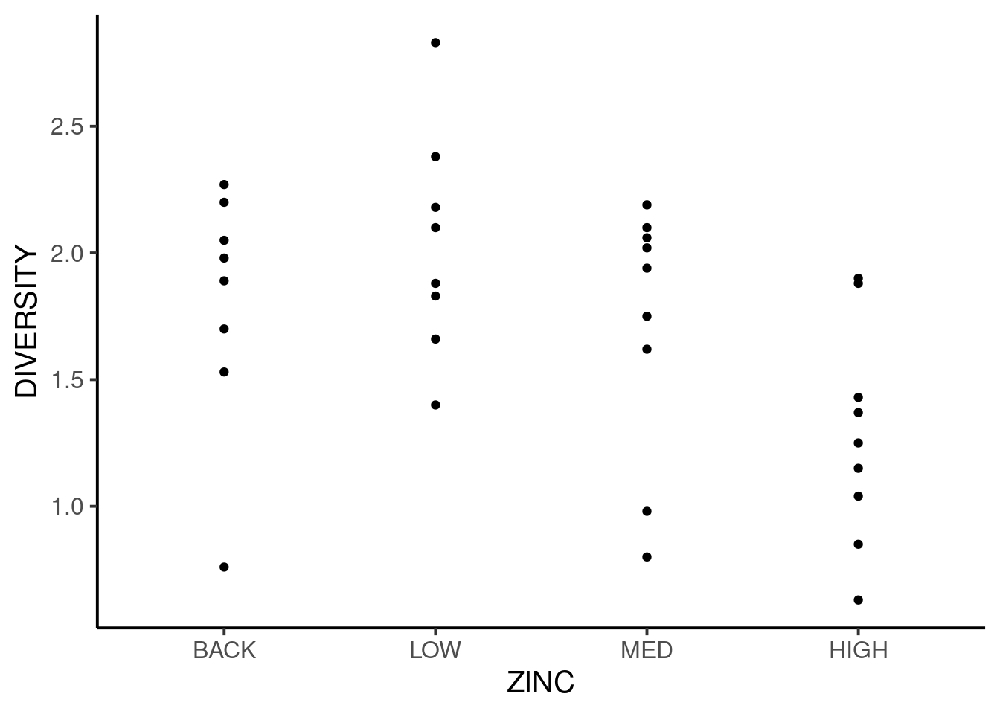
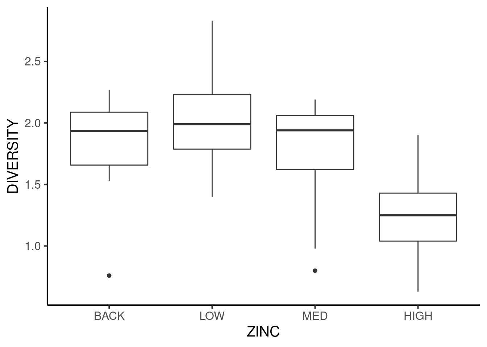
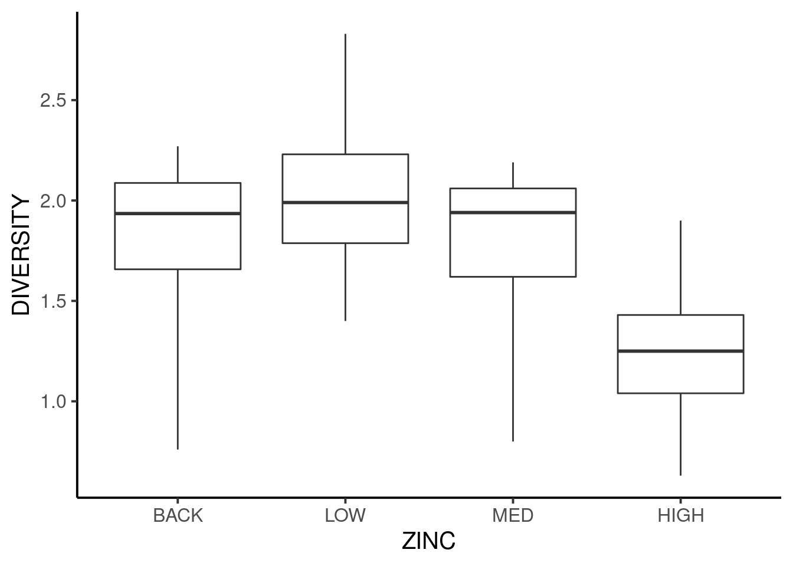
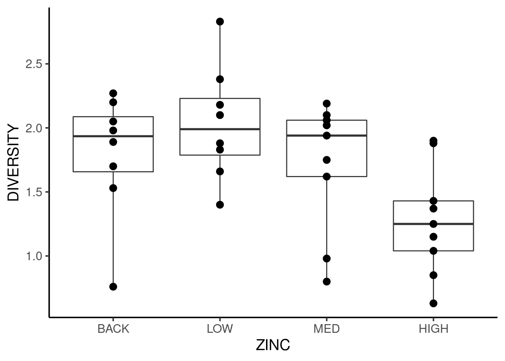
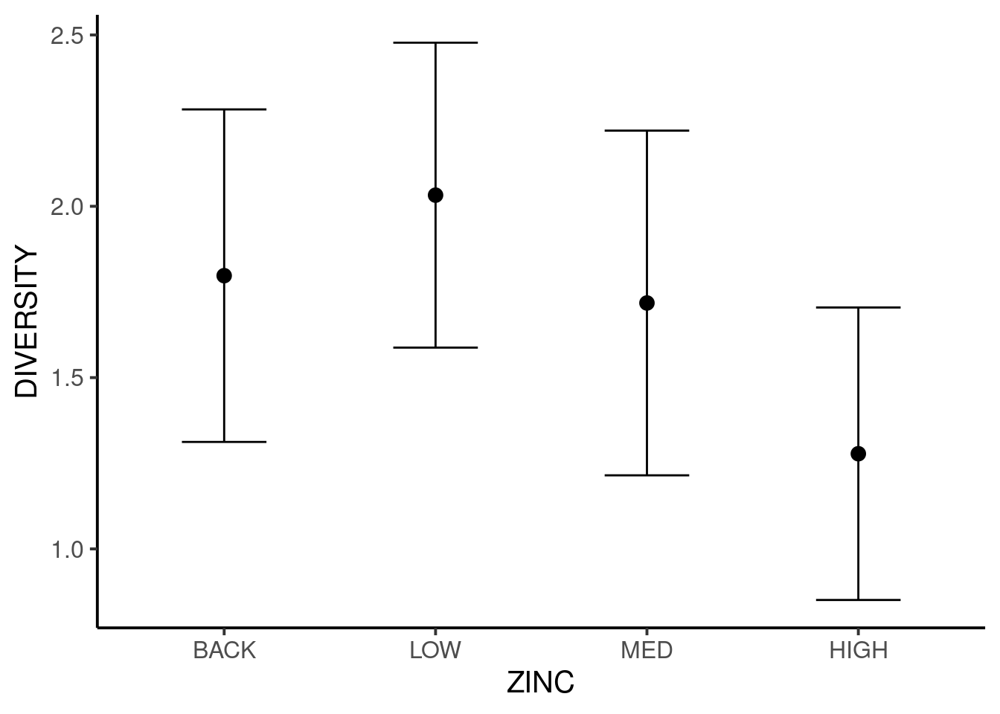
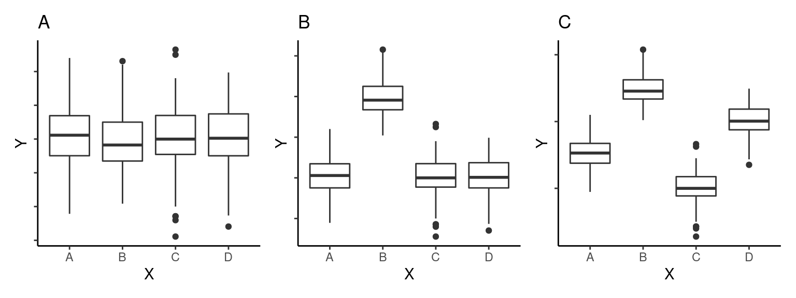
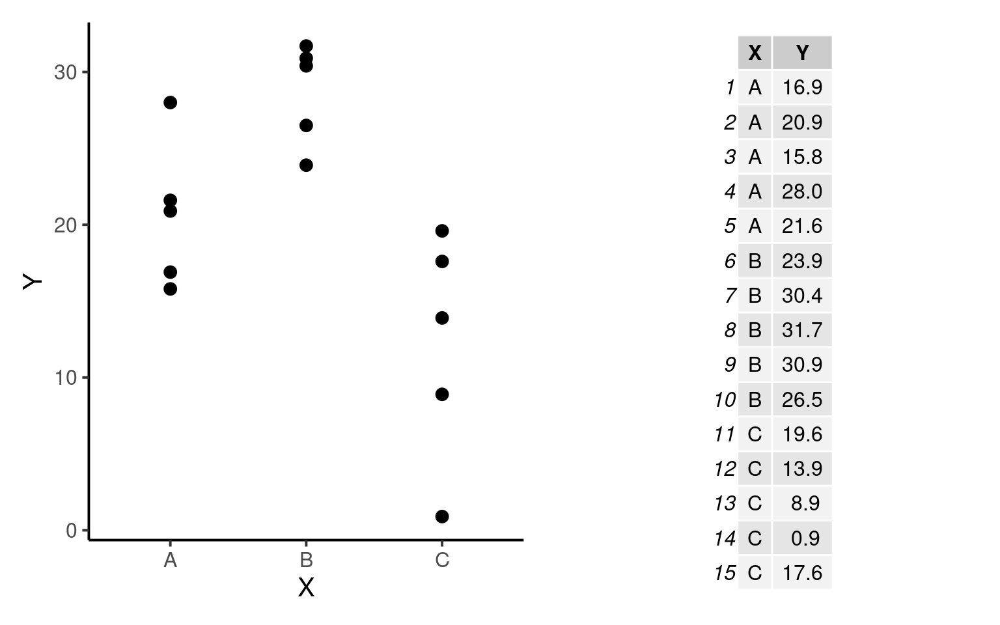
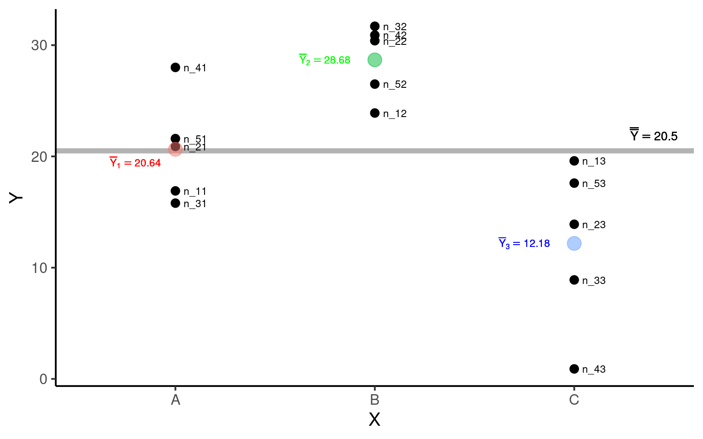
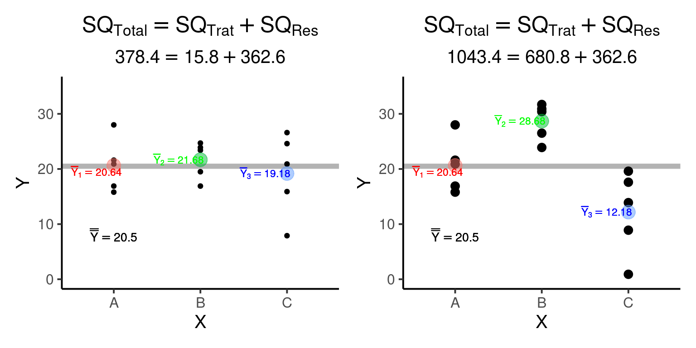

library(tidyverse)
library(flextable)
library(patchwork)
library(gridExtra)
source('scripts/anova_sim.r')11 Associação entre variáveis quantitativas e qualitativas
Pacotes e funções utilizadas no capítulo
Neste capítulo vamos descrever a associação entre uma variável \(Y\) contínua e uma variável \(X\) categórica denominadas respectivamente de variável dependente (ou resposta) e variável independente (ou preditora)
Assumimos explicitamente que \(Y\) é função (depende) de \(X\) e não o contrário. O nome variável preditora vem do fato que, se \(Y\) e \(X\) estão associadas, ao conhecemos \(X\) somos capazer de predizer a resposta média em \(Y\).
11.1 Visualizando a distribuição de \(Y\) em diferentes grupos
Importe a base de dados medley.csv (disponível também em Chapter 10 - Single factor classification (ANOVA)) que avalia o impacto da presença de metais pesados na diversidade de espécies de diatomácias em riachos (Medley and Clements (1998); Queen, Quinn, and Keough (2002); Logan (2011)).
medley = read_csv("medley.csv") %>%
mutate(STREAM = factor(STREAM),
ZINC = factor(ZINC, ordered = TRUE,
levels = c("BACK", "LOW",
"MED", "HIGH")))
medley %>% flextable()STREAM | ZINC | DIVERSITY |
Eagle | BACK | 2.27 |
Eagle | HIGH | 1.25 |
Eagle | HIGH | 1.15 |
Eagle | MED | 1.62 |
Blue | BACK | 1.70 |
Blue | HIGH | 0.63 |
Blue | BACK | 2.05 |
Blue | BACK | 1.98 |
Blue | HIGH | 1.04 |
Blue | MED | 2.19 |
Blue | MED | 2.10 |
Snake | BACK | 2.20 |
Snake | MED | 2.06 |
Snake | HIGH | 1.90 |
Snake | HIGH | 1.88 |
Snake | HIGH | 0.85 |
Arkan | LOW | 1.40 |
Arkan | LOW | 2.18 |
Arkan | LOW | 1.83 |
Arkan | LOW | 1.88 |
Arkan | MED | 2.02 |
Arkan | MED | 1.94 |
Arkan | LOW | 2.10 |
Chalk | LOW | 2.38 |
Chalk | HIGH | 1.43 |
Chalk | HIGH | 1.37 |
Chalk | MED | 1.75 |
Chalk | LOW | 2.83 |
Splat | BACK | 1.53 |
Splat | BACK | 0.76 |
Splat | MED | 0.80 |
Splat | LOW | 1.66 |
Splat | MED | 0.98 |
Splat | BACK | 1.89 |
A coluna STREAM é uma variável categórica contendo o nome dos \(6\) riachos amostrados (Arkan, Blue, Chalk, Eagle, Snake, Splat). A coluna ZINC é uma variável categórica ordinal com \(4\) níveis de concentração de zinco na água (BACK < LOW < MED < HIGH). O primeiro nível (BACK) é o nível de referência (BACKGROUND). Finalmente, a coluna DIVERSITY é uma variável contínua que contém a diversidade de diatomácieas (medida pelo índice de diversidade de Shannon medida de cada uma das 34 amostras.
Vamos nos concentrar nas variáveis DIVERSITY e ZINC. DIVERSITY será a variável resposta. Em delineamento experimental, dizemos que ZINC é um tratamento, isto é, uma condição experimental sob a qual nossa variável dependente \(Y\) foi mensurada.
Para verificarmos a distribuição de diversidade para cada concentração de zinco podemos fazer simplesmente um gráfico de dispersão como fizemos no Capítulo 10. A diferença agora é que \(X\) trata-se de uma variável categórica ordinal com \(4\) níveis.
ggplot(medley) +
aes(x = ZINC, y = DIVERSITY) +
geom_point() +
theme_classic(base_size = 15)
11.1.1 Boxplots para os níveis do tratamento
Não há problema em apresentarmos um gráfico de dispersão. No entanto, em situações deste tipo estamos comumente interessados em representar medidas-resumo que nos permitam comparar os diferentes níveis do tratamento. A forma mais comum de representar esta situação é por meio de um boxplot (Capítulo 7) para cada nível do tratamento.
ggplot(medley) +
aes(x = ZINC, y = DIVERSITY) +
geom_boxplot() +
theme_classic(base_size = 15)
Na figura acima estão representadas a mediana, os quartis (\(1^o\) e \(3^o\)) e os pontos máximo e mínimo para cada nível do tratamento. Alguns pontos extremos podem aparecer isoladamente para indicar que estão muito distantes dos demais. Podemos controlar esta representação com o argumento coef na função geom_boxplot.
ggplot(medley) +
aes(x = ZINC, y = DIVERSITY) +
geom_boxplot(coef = 3) +
theme_classic(base_size = 15)
Vemos que o boxplot referente ao nível HIGH está em uma posição inferior aos demais, sugerindo que a diversidade de diatomáceas tende a ser mais baixa para níveis elevados de zinco.
Exitem outras variações que podem nos ajudar a entender melhor os padrões. Podemos sobrepor os pontos individuais sobre os boxplots:
ggplot(medley) +
aes(x = ZINC, y = DIVERSITY) +
geom_boxplot(coef = 3) +
geom_point(size = 3) +
theme_classic(base_size = 15)
11.1.2 O gráfico de erros
Nas figuras acima representamos os quartis das distribuições. Podemos estar interessados em apresentar somente os pontos médios (média aritimética) juntamente com barras de erro que representem alguma medida de dispersão (ex. desvio padrão). Para isto é necessário inicialmente criar um data.frame com estas medidas.
medley_barras = medley %>%
group_by(ZINC) %>%
summarise(Media = mean(DIVERSITY),
Desvio = sd(DIVERSITY))
medley_barras %>%
flextable()ZINC | Media | Desvio |
BACK | 1.797500 | 0.4852613 |
LOW | 2.032500 | 0.4449960 |
MED | 1.717778 | 0.5030104 |
HIGH | 1.277778 | 0.4268717 |
E em seguida plotar a figura.
ggplot(medley_barras, aes(x = ZINC)) +
geom_point(aes(y = Media), size = 3) +
geom_errorbar(aes(ymin = Media - Desvio,
ymax = Media + Desvio), width = 0.4) +
labs(y = 'DIVERSITY') +
theme_classic(base_size = 15)
Aqui vemos somente os pontos médios e as barras de erro, que estão à distância de \(1\) desvio padrão acima e abaixo da média (\(\overline{Y} \pm 1s\)). Embora tenhamos expressado as distâncias utilizado o desvio padrão como medida de variação, poderíamos ter utilizado outras medidas como o erro padrão ou o intervalo de confiança O importante é sempre deixar claro qual medida de variação está semdo representada no gráfico de erros (Veja: Krzywinski & Altman, 2013 - Error bars - Points of Significance).
11.2 Partição das Soma dos Quadrados
Ao representarmos a distribuição de uma variável \(Y\) contínua em função de uma variável \(X\) categórica, geralmente estamos interessados em determinar se os diferentes níveis de \(X\) (diferentes grupos) têm médias similares ou se ao menos um dos níveis têm média diferente dos demais. Queremos uma medida que nos permita diferenciar situações como as apresentadas abaixo.

Na figura \(A\) todos os grupos são provenientes da mesma distribuição e têm médias aproximadamente iguais (\(\overline{Y}_A \approx \overline{Y}_B \approx \overline{Y}_C \approx \overline{Y}_D\)). Na figura \(B\) o segundo grupo tem média mais elevada que os demais, e na da figura \(C\), todas as médias parecem ser diferentes entre si (\(\overline{Y}_A \ne \overline{Y}_B \ne \overline{Y}_C \ne \overline{Y}_D\)).
Para mensurar o grau de associação entre \(Y\) e \(X\) e entender como podemos diferenciar as situações acima, vamos introduzir o processo de Partição da Soma dos Quadrados.
Suponha a situção abaixo:

Notações
- Temos \(k = 3\) grupos (
A,BouC) e para cada grupo \(n = 5\) observações. Denotamos por \(n_{ij}\) o número de observações dentro de cada grupo, em que \(i\) é a i-ésima observação (\(i = 1\) a \(5\)) do j-ésimo grupo (\(j = 1\) a \(3\) - gruposAaoC). Neste exemplo, o número de observações em cada grupo é o mesmo (\(n_1 = n_2 = n_3 = n\)), de modo que o total de observações é dado por:
\(N = k \times n = n_1 + n_2 + n_3 = 15\)
A média de cada grupo será denotada por \(\overline{Y}_j\), que neste exemplo são: \(Y_1 = 20.64\) (grupo
A), \(Y_2 = 28.68\) (grupoB) e \(Y_3 = 12.18\) (grupoC).Vamos denotar por \(\overline{\overline{Y}}\) a Grande Média, isto é, a média geral de todas as observações independente do grupo de origem.
\[\overline{\overline{Y}} = \sum_{j = 1}^{k}\sum_{i = 1}^{n}\frac{Y_{ij}}{N} = \frac{\overline{Y_1} + \overline{Y_2} + \overline{Y_3}}{3} = 20.5\]
Podemos agora observar estes elementos no gráfico de dispersão.

Em seguida, precisamos calcular \(3\) quantias, a Soma dos Quadrados Totais (\(SQ_{Total}\)), a Soma dos Quadrados dos Tratamentos \(SQ_{Trat}\) e a Soma dos Quadrados dos Resíduos \(SQ_{Res}\).
- Soma dos Quadrados Totais \(SQ_{Total}\): mede as diferenças entre \(Y_{ij}\) e \(\overline{\overline{Y}}\). Temos nesta expressão o somatório dos desvios ao quadrado de todas as observações com relação à grand, fig.align=‘center’, fig.width=8, fig.height=4e média independente do grupo de origem de cada observação.
\[SQ_{Total} = \sum_{j = 1}^{k}\sum_{i = 1}^{n}(Y_{ij} - \overline{\overline{Y}})^2\]
- Soma dos Quadrados dos Tratamentos \(SQ_{Trat}\): mede as diferenças entre as médias dos tratamentos \(\overline{Y}_j\) e \(\overline{\overline{Y}}\), sendo portanto os desvios ao quadrado da média de cada tratamento subtraída da grande média. \(SQ_{Trat}\) também é chamada de soma dos quadrados entre grupos ou entre tratamentos
\[SQ_{Trat} = \sum_{j = 1}^{k}\sum_{i = 1}^{n_{j}}(\overline{Y}_{j} - \overline{\overline{Y}})^2 = \sum_{j = 1}^{k}n_{j}(\overline{Y}_{j} - \overline{\overline{Y}})^2\]
- Soma dos Quadrados dos Resíduos \(SQ_{Res}\): mede as diferenças entre cada observação \(Y_{ij}\) e a média de seu próprio grupo \(\overline{Y}_{j}\). \(SQ_{Res}\) também é chamada de soma dos quadrados dentro dos grupos ou dentro dos tratamentos
\[SQ_{Res} = \sum_{j = 1}^{k}\sum_{i = 1}^{n_{j}}(Y_{ij} - \overline{Y}_{j})^2\]
A característica aditiva das somas dos quadrados
A partição da soma dos quadrados consiste em decompor a variação total do experimento em uma parcela atribuída à variação entre tratamentos e outra parcela da variação dentro dos tratamentos. Isto é possível pois as somas dos quadrados definidas acima podem ser expressas de forma aditiva como:
\[SQ_{Total} = SQ_{Trat} + SQ_{Res}\]
Deste modo, é possível demostrar que:
\(\sum_{j = 1}^{k}\sum_{i = 1}^{n}(Y_{ij} - \overline{\overline{Y}})^2 = \sum_{j = 1}^{k}n_{j}(Y_{j} - \overline{\overline{Y}})^2 + \sum_{j = 1}^{k}\sum_{i = 1}^{n}(Y_{ij} - \overline{Y}_{j})^2\)
11.3 Medindo a associação entre \(Y\) e \(X\)
A característica aditiva das somas dos quadrados pode ser utilizada para mensurar o grau de dependência de \(Y_{ij}\) com respeito aos diferentes tratamentos. Compare as duas figuras abaixo:

A soma dos quadrados dentro dos grupos é a mesma nas duas figuras (\(SQ_{Res} = 362.6\)). No entanto, na figura da esquerda, em que as médias dos tratamentos são similares (e consequentemente próximas à grande média), a soma dos quadrados entre os tratamentos é muito menor (\(SQ_{Trat}^{esquerda} = 15.8\)) que na figura da direita, em que as médias dos tratamentos estão distantes entre si (\(SQ_{Trat}^{direita} = 680.8\)). É desta forma que a partição das somas dos quadrados nos permite diferenciar situações em que: i - a média dos grupos depende dos níveis do tratamento (figura da direita); de situações em que ii - a média não depende dos níveis do tratamento (figura da esquerda).
11.3.1 O coeficiente de determinação (\(R^2\))
Podemos expressar a relação entre \(SQ_{Trat}\) e \(SQ_{Total}\) pela expressão:
\[R^2 = \frac{SQ_{Trat}}{SQ_{Trat} + SQ_{Res}} = \frac{SQ_{Trat}}{SQ_{Total}}\]
\(R^2\) é chamado de coeficiente de determinação e varia entre \(0\) e \(1\). Se \(R^2 = 0\) toda a variação em \(Y\) é causada por \(SQ_{Res}\) (\(\overline{\overline{Y}} = \overline{Y}_1 = \overline{Y}_2 = \cdots = \overline{Y}_k\)). À medida que as médias dos tratamentos se distanciam umas das outras, \(R^2\) se aproxima de \(1\) pois a maior parte da variação em \(Y\) é causada por \(SQ_{Trat}\).
11.4 Partição das Soma dos Quadrados no ambiente R
Voltando ao conjundo de dados medley.csv, uma forma de obter os somatórios dos quadrados no R é utilizando a função aov (mas veja também a função lm).
aov(DIVERSITY ~ ZINC, data = medley)Call:
aov(formula = DIVERSITY ~ ZINC, data = medley)
Terms:
ZINC Residuals
Sum of Squares 2.566612 6.516411
Deg. of Freedom 3 30
Residual standard error: 0.4660619
Estimated effects may be unbalancedO resultado retorna a soma dos quadrados dos tratamentos (neste caso a coluna ZINC) e dos resíduos (coluna Residuals). Como o \(SQ_{Total}\) é simplesmente a soma dos dois anteriores, podemos obtê-lo facilmente:
sq = aov(DIVERSITY ~ ZINC, data = medley)
SQTrat = anova(sq)$`Sum Sq`[1]
SQRes = anova(sq)$`Sum Sq`[2]
SQTotal = SQTrat + SQRes
SQTotal[1] 9.083024Por fim, o \(R^2\) pode ser calculado por:
R2 = SQTrat / SQTotal
R2[1] 0.2825725
Logan, Murray. 2011. Biostatistical Design and Analysis Using r: A Practical Guide. John Wiley & Sons.
Medley, C. N., and W. H. Clements. 1998. “Responses of Diatom Communities to Heavy Metals in Streams: The Influence of Longitudinal Variation.” Ecological Applications 9: 631–44.
Queen, Jerry P, Gerry P Quinn, and Michael J Keough. 2002. Experimental Design and Data Analysis for Biologists. Cambridge university press.